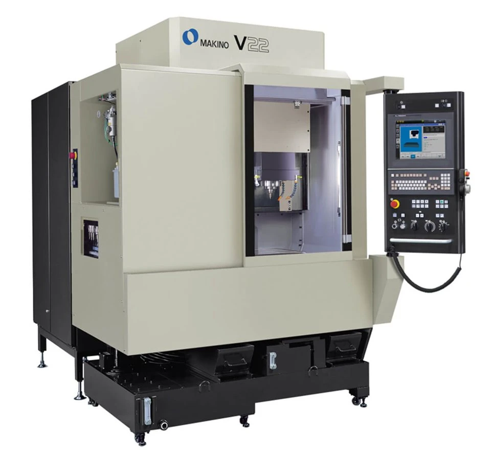

V-SERIES / ELECTRICAL SERVICE SUPPORT
V22Đúng máy. Đúng bộ bản vẽ.
Chọn model, đời điều khiển và mã bản vẽ / revision của máy.
- 01 Model máy
- 02 Pro 5 / Pro 6
- 03 Bộ bản vẽ
- 04 Sơ đồ điện
Chọn model máy
Đổi model ↗BƯỚC 02
Chọn bộ điều khiển
BƯỚC 03
Chọn bộ bản vẽ
Đối chiếu unit và revision trên bìa tài liệu đi kèm máy. Pro 6 hiện chỉ có tài liệu bảo trì và chỉnh LS, chưa có bộ sơ đồ điện.
Nhận diện theo tài liệu đi kèm máy
Pro 5 / Pro 6 xác định đời điều khiển; unit và revision xác định bộ bản vẽ cụ thể. Tài liệu bảo trì không thay thế sơ đồ điện. STD/CE, spindle, 5XB, APC/AWC và các nhánh OPTION được đối chiếu theo từng trang và cấu hình máy.
Bản có lớp chữ đầy đủ hỗ trợ sơ đồ hệ thống và tìm I/O. Bản scan mở nguyên bản theo trang; trạng thái được ghi rõ trên từng lựa chọn.
Ảnh V22 tham khảo model: Makino. Đối chiếu ngoại hình và cấu hình máy thực tế.